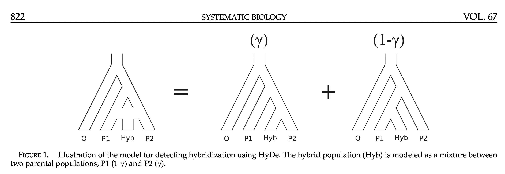

Quartet site pattern frequency under Hybridization

Tau 4:
Tau 3:
Tau 2:
Tau 1:
Gamma:
Theta:
Sequence Length:
Estimate inheritance parameter using xxyy, xyxy, and xyyx; the computed gamma=
when true gamma=
Detect Introgression using the D-stat:
To understand the rationale behind this test we first have to delve into the D-statistic,
also known as the ABBA-BABA-test. This approach was developed to quantify the amount of genetic
exchange between Neanderthals and modern humans. The rationale behind this test is quite
straightforward: it considers ancestral (A) and derived (B) alleles across the genomes
of four taxa. Under the scenario without introgression, two particular allelic patterns
ABBA and BABA should occur equally frequent. An excess of either ABBA or BABA,
resulting in a D-statistic that is significantly different from zero, is indicative of
gene flow between two taxa. A positive D-statistic (i.e. an excess of ABBA) points to
introgression between P2 and P3, whereas a negative D-statistic (i.e. an excess of BABA)
points to introgression between P1 and P3.
A Z-score can be calculated to assess the significance of the D-statistic. I will not explain
the mathematical underpinnings of the Z-score. All you need to know, is that a Z-score bigger
than 3 or smaller than -3 can be interpreted as a significant result. Interested readers can
check Durand et al. (2011) for more information.
D-stat can detect introgression when 0< gamma< 0.5.
xyyx:
xyxy:
D-stat value:
Z-score value:
Warning : y-axis maximum is set to the second largest number + 100. xxxx is the most likely
to be the largest. So xxxx bar is not scaled with respect to the rest of the bars.